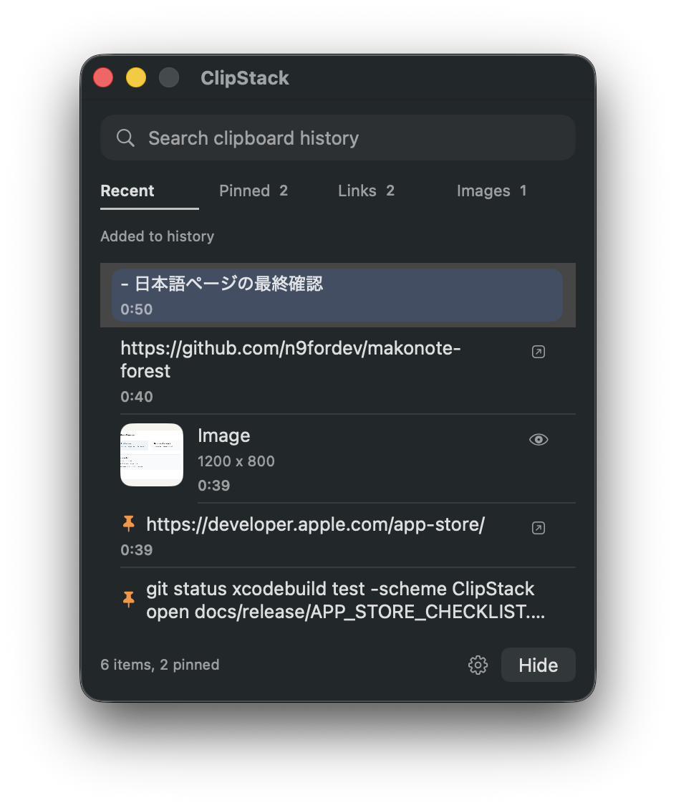
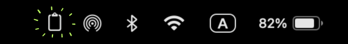
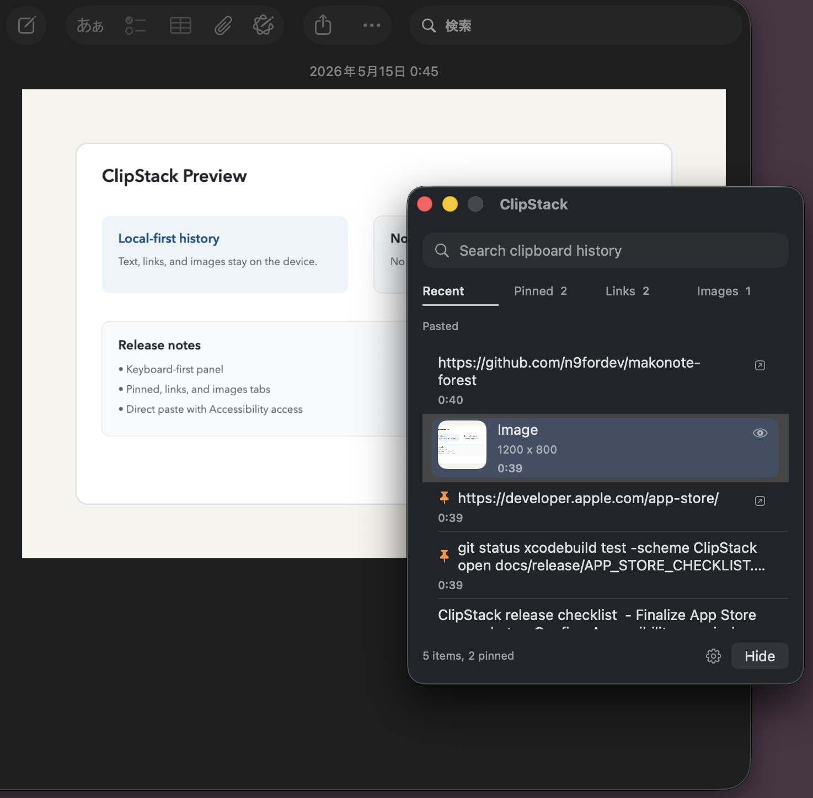
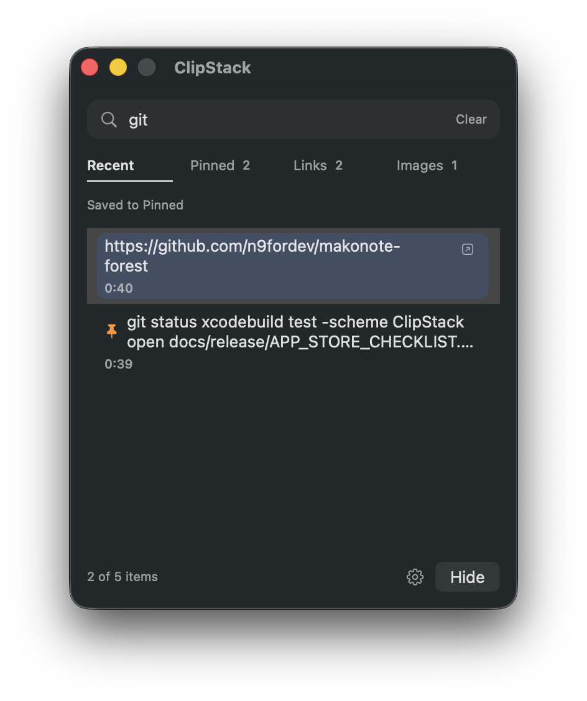
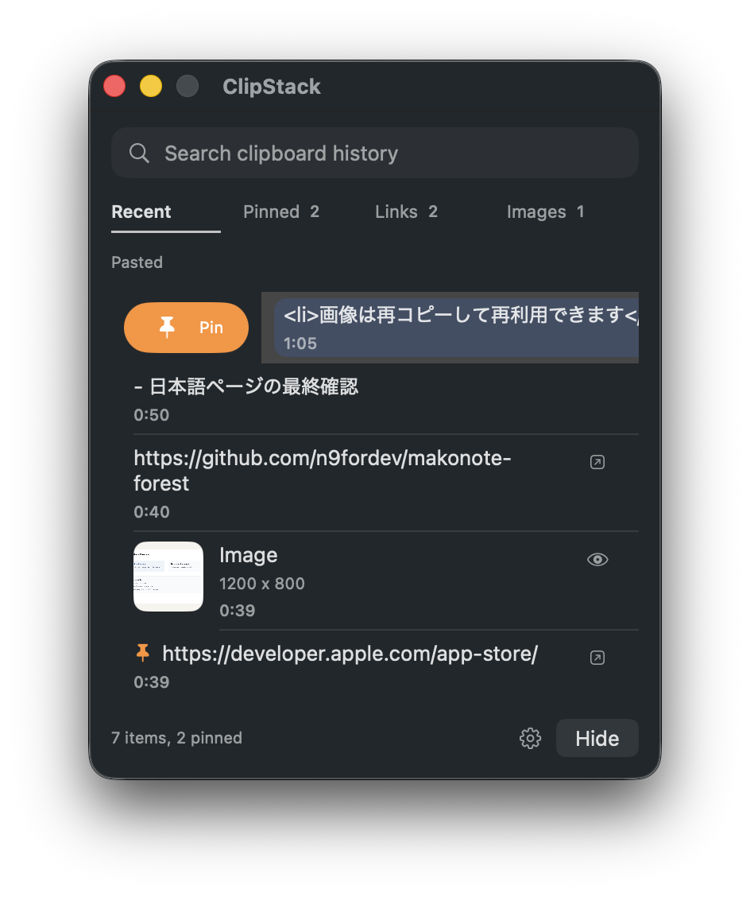
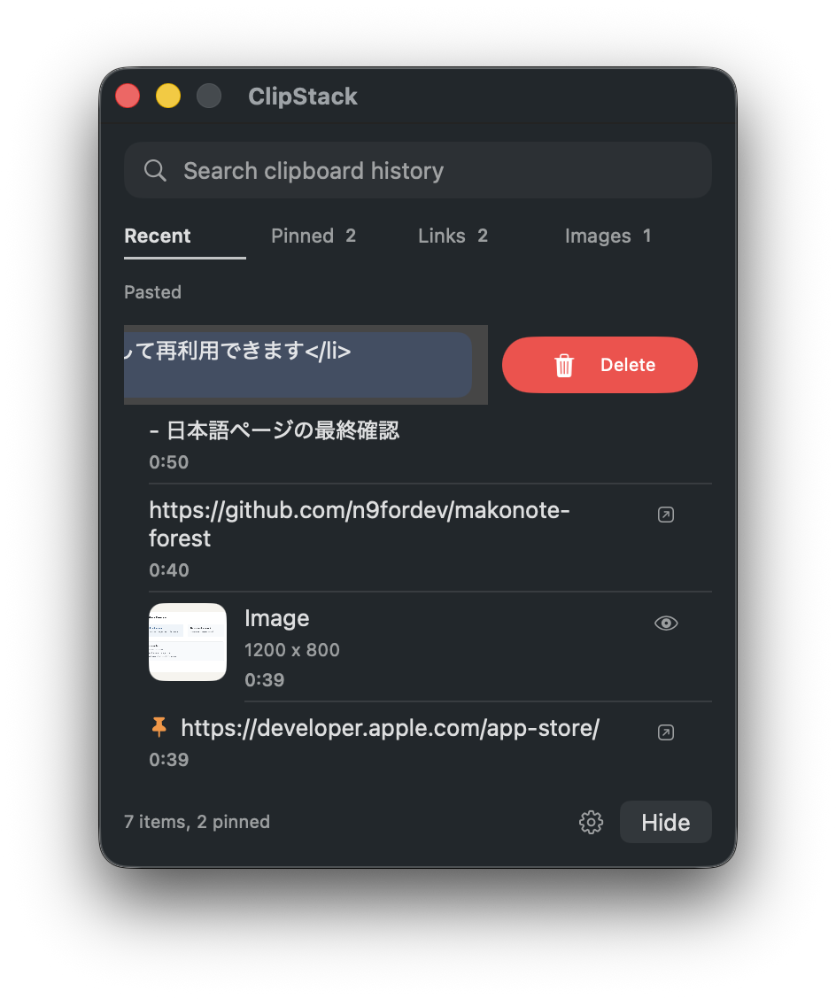
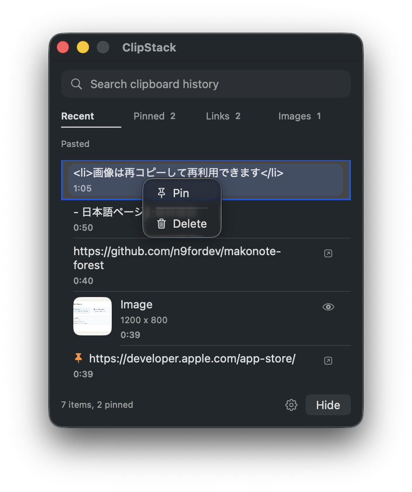
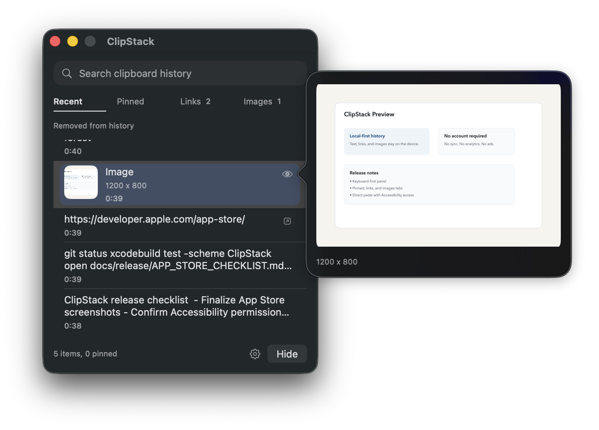
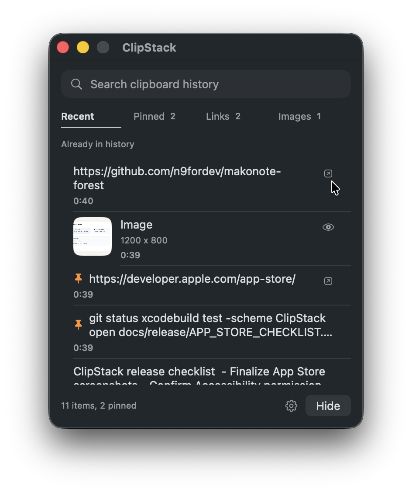

ClipStacks is a clipboard history tool you open only when you need it.
It stays in the menu bar most of the time. When needed, open the panel and reuse copied text, links, or images without breaking your current workflow.

How to launch ClipStacks
- Click the menu bar icon
- Open the panel with the global hotkey

The default hotkey is Control + Option + Command + V.
You can change it later from the settings window.
Basic actions
- Click an item to reuse it
- Text, links, and images are copied back to the clipboard for quick paste
- Paste into the active app with Command-V

Keyboard cheat sheet
Control + Option + Command + V |
Open the ClipStacks panel |
|---|---|
Esc |
Close the panel |
Enter |
Reuse the selected item |
↑ / ↓ |
Move between history items |
← / → |
Switch tabs |
Command + F |
Move focus to the search field |
What each tab shows
- Recent: shows recent clipboard history
- Pinned: shows only pinned items
- Links: shows only items recognized as URLs
- Images: shows only imported image items
Search
The search field filters only the currently visible tab. For example, searching while the Links tab is active narrows down links only.

Pinning and deleting items
You can keep important items pinned and remove items you no longer need directly from the list.


Swipe right to Pin or Unpin an item, and swipe left to Delete it.
If swipe gestures are not convenient, you can also use the context menu by right-clicking an item.

Image preview
Hover over the preview icon on an image item to open a quick preview. This is useful when you want to confirm the image before reusing it.

Opening links
Items recognized as URLs can be opened in your browser from the trailing icon or the context menu. This is useful when you want to check a link immediately instead of pasting it first.

What you can change in Settings
- Whether history is saved between launches
- History limit presets (20 / 50 / 100 / 200)
- Global hotkey presets
- Clearing all saved history